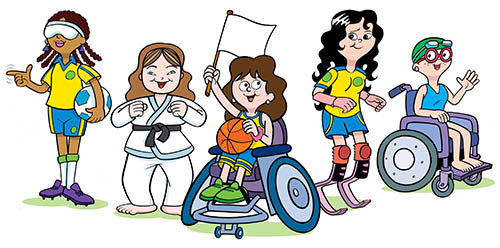

Disabled Children
The disabled child is posing a great problem to the world. It is calculated that by the year 2000 there will be at least 600 million disabled people. The present condition of 125 million children, who are disabled belong to developing countries. The most prevalent forms of disability are physical impairment, chronic illness, mental retardation and sensory disablilities. Recognising this global problem the General Assembly of the United Nation had declared 1981 as the International Year of the Disabled Persons with the keynote theme "full participation and equality.' Its resolution lay down five principal objectives for improving the condition of the disable (1) Helping in their physical and psychological adjustment to their physical and psychological adjustment to their surroundings; (2) To provide proper training and assistance to get job; (3) Encouraging study and reserch projects to help them; (4) Educating and informing the public of the rights of disabled persons; (5) Promoting effective measures for prevention of disability. Every citizen should be aware of the sad plight of disabled children. Much can be done as regards prevention, protection, immunisation etc. Immunisation camps should be organised, parents should be aware that inadequate nutrition may cause disability and the involvement of public in the remedial work and rehabilitation can help to do solid work in their field. Individuals can show care for the disabled children by spending sometimes with them. It is a great thing to bring some light to their dark world. Reading aloud to children in a blind school, contacting the mothers of physically handicapped and helping them in this task. Every area can organise a special play-group and other children should accept their disabled friends and play with them. Prevention and protection from disability can reduce suffering.